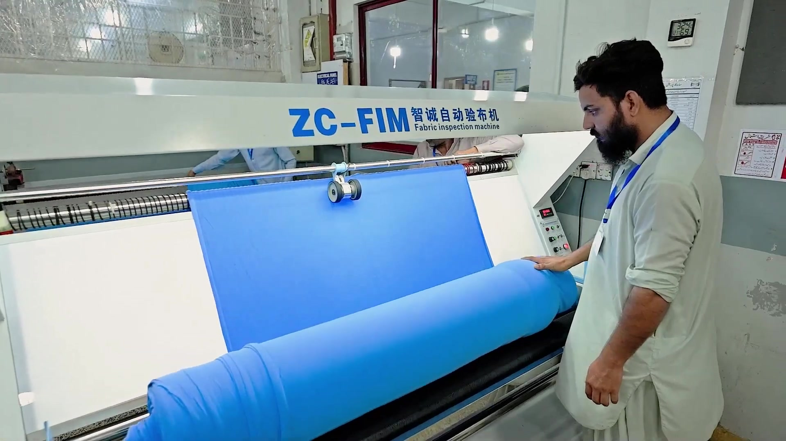
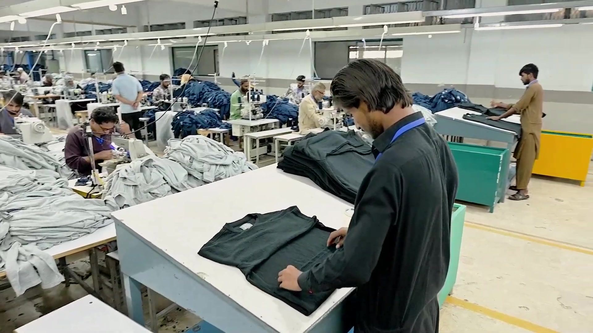
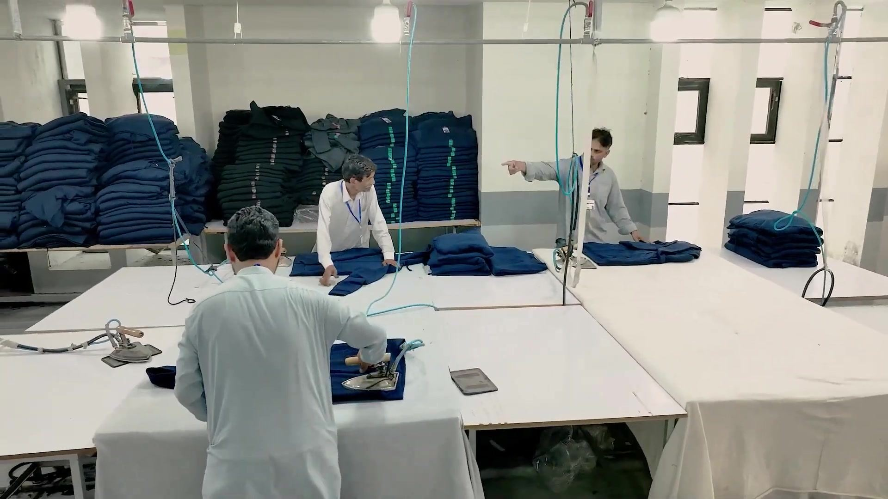
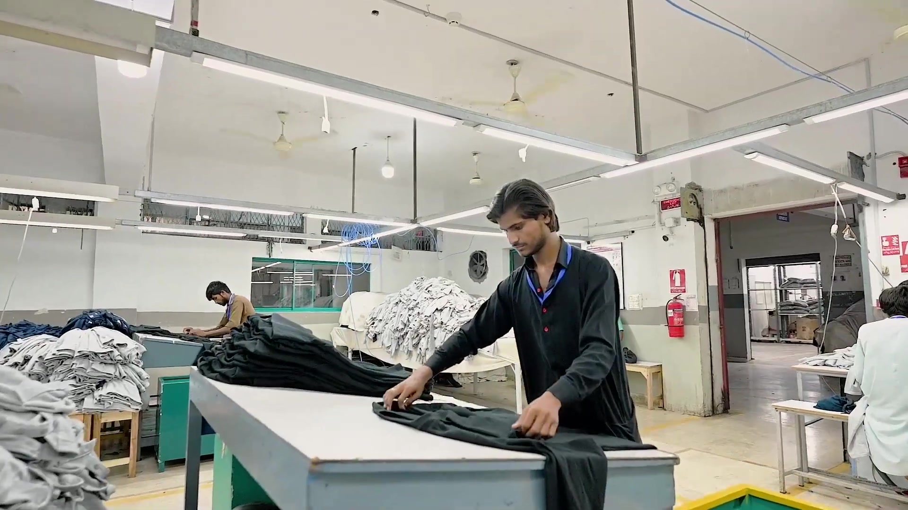
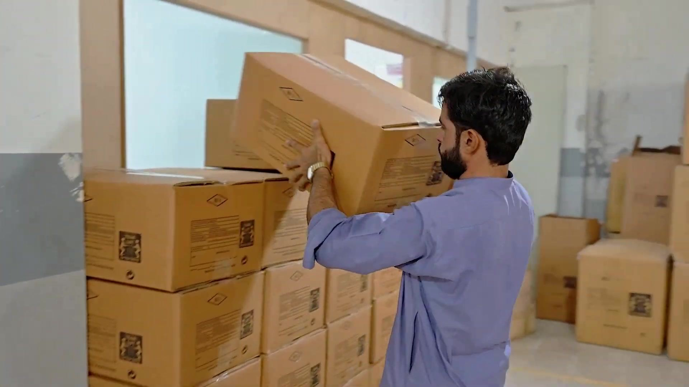
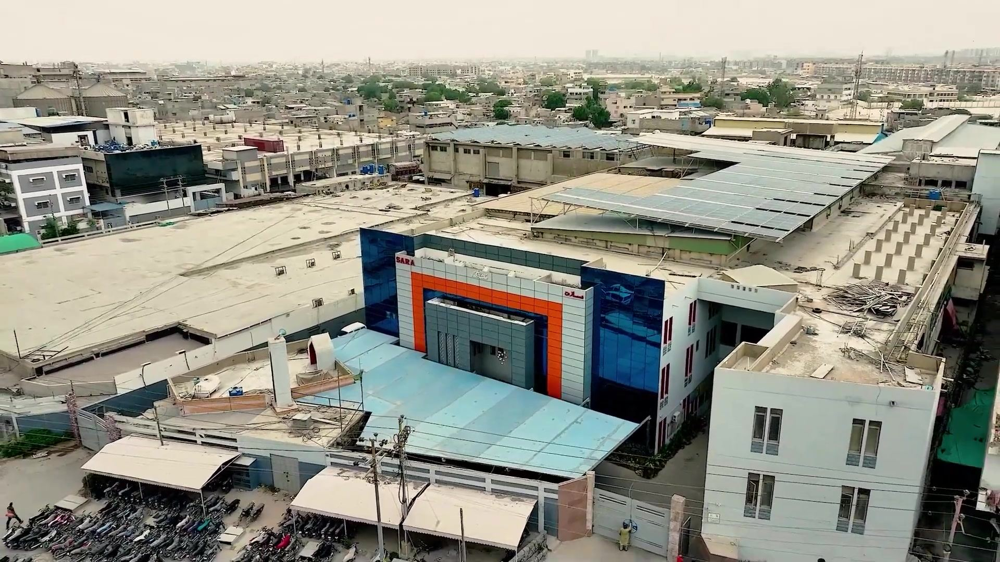

Where We Are
L-3/A, Block 22, F.B. Area, Karachi, Sindh 75950, Pakistan. Close to the port and the airport.
This is the same route a visiting customer walks. Nothing is staged for the camera — these frames are taken from our own company film.

01 Fabric InspectionEvery roll is checked on a dedicated inspection machine before it is allowed near the cutting floor. 02 SpreadingAutomatic spreaders lay the fabric flat and even, ply after ply, ready for the cutter.
02 SpreadingAutomatic spreaders lay the fabric flat and even, ply after ply, ready for the cutter.
 03 Automatic CuttingAutomatic cutting tables follow the digital marker, holding precision at speed with minimal waste.
03 Automatic CuttingAutomatic cutting tables follow the digital marker, holding precision at speed with minimal waste.
 04 Cutting RoomThe cutting room runs to plan, with panels bundled and issued to the right line at the right time.
04 Cutting RoomThe cutting room runs to plan, with panels bundled and issued to the right line at the right time.

05 Stitching LinesA modular chain basket system keeps work in progress visible and the line balanced. 06 Line DetailSkilled operators, each with a defined operation, checked at the source rather than at the end.
06 Line DetailSkilled operators, each with a defined operation, checked at the source rather than at the end.
 07 FinishingTrimming, thread sucking and detailing, handled by a crew who see the garment as a whole.
07 FinishingTrimming, thread sucking and detailing, handled by a crew who see the garment as a whole.

08 Steam PressingSteam press stations set the finished shape before the garment goes for final check.
09 Final CheckThe final audit happens before a single carton is sealed, not after. 10 PackingGarments are bagged, boxed and moved onto the automatic carton line, export ready.
10 PackingGarments are bagged, boxed and moved onto the automatic carton line, export ready.

11 DispatchCartons are staged and loaded under supervision, supporting C-TPAT and GSV requirements.
12 The PlantThe whole operation from above, in F.B. Area, Karachi.We treat a customer audit as a chance to show exactly how we work. Tell us when you are in Karachi and we will arrange the visit.
L-3/A, Block 22, F.B. Area, Karachi, Sindh 75950, Pakistan. Close to the port and the airport.
Monday to Saturday, 9:00 to 18:00 Pakistan Standard Time. Give us a few days notice where you can.
WRAP, SMETA, WCA, GRS, GSV, C-TPAT, ISO 9001 and ISO 14001. Bring your own auditor if you prefer.